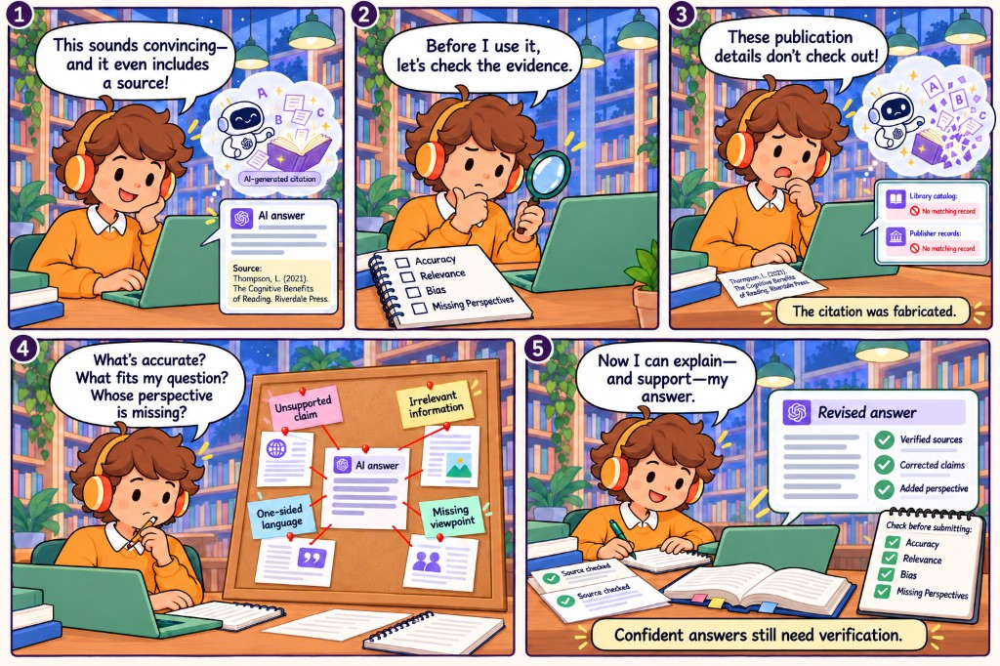

AI hallucinations & evaluating AI outputs
A five-panel educational comic about why convincing AI answers still need verification. I used Codex to generate each panel from a shared character, setting, and learning goal — then assembled them into one storyboard.

What the comic teaches
Confident-looking AI output can still include fabricated sources. Before using an answer, check accuracy, relevance, bias, and missing perspectives — then revise with evidence you can actually support.
- A polished AI response includes an impressive citation; the student is pleased.
- Before using it, they pause and check the evidence against a short evaluation checklist.
- Library and publisher searches turn up nothing — the citation was fabricated.
- A deeper pass flags unsupported claims, irrelevant detail, one-sided language, and missing viewpoints.
- The student revises with verified sources and can explain — and support — the answer.
How I made it
Each panel was generated with Codex from a reusable prompt template: same student, AI metaphor character, library setting, pastel comic style, and square panel shape. Only the story step, dialogue, and visual clues changed from panel to panel. Below is the prompt used for panel one.
Create panel one of a five-panel educational comic storyboard about AI hallucinations and evaluating AI outputs.
Learning goal: Show that convincing AI answers can contain fabricated information and should be checked before use.
Reference images: Use the attached images as references for CHARACTER & SETTING. Simplify them into clear comic illustrations, preserving minimalist aesthetic.
Consistent visual style: [STYLE, e.g., clean classroom comic with bold outlines, flat colors, minimal shading, and uncluttered backgrounds].
Color palette: consistent pastel.
Panel shape: Square
Recurring student: [AGE RANGE, HAIR, SKIN TONE, CLOTHING, DISTINCTIVE FEATURES, as seen in first image
Recurring AI character: [a brown haired student with orange sweater and green laptop
Setting: [library].
This panel’s story step: [A student sits at a laptop. On screen, a polished AI response includes an impressive-looking citation. The student looks pleased.].
Main action: Speech bubble: Student: “This sounds convincing—and it even includes a source!”
Facial expression and body language: [Pleased].
Composition: [desk and character in foreground, library in background.
Essential visual clues: [TWO OR THREE DETAILS THAT COMMUNICATE THE LEARNING POINT].
AI hallucination metaphor, if applicable: [e.g., the robot assembles an imaginary book from floating words; the book later dissolves when its citation is checked]. Present this as a metaphor for fabricated output, without implying deliberate deception..
Text placement: [above head].
Keep the scene focused on one main action. Make the learning point understandable through the visuals. Preserve character designs, clothing, setting, and illustration style from the reference panel. Generate only this panel.Takeaway
Prompting for consistency — character, setting, style, and learning goal — made it possible to generate a coherent multi-panel lesson instead of five disconnected images. The comic’s closing line is also the project’s: confident answers still need verification.